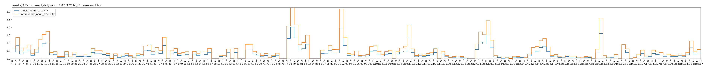
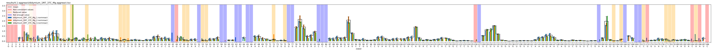
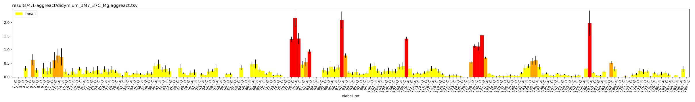
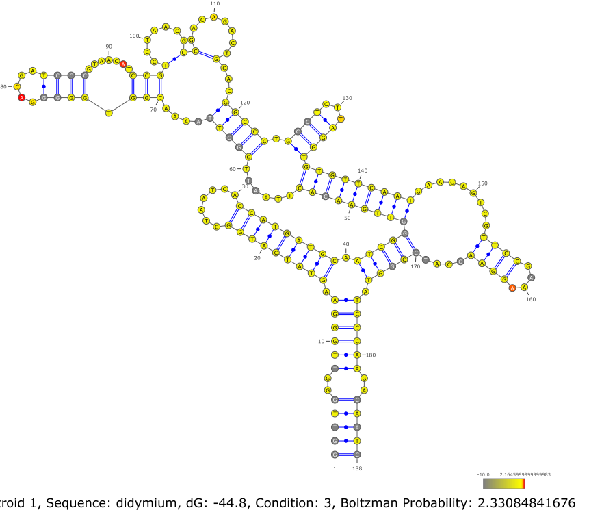

Output and Reports
While running are generate figures in results/figures
to access all figures and information about snakemake execution, you can execute
./shape-ce.sh --report report.html
Then open the generate report in your web browser
Description of mains figures generated :
Normalized Reactivity
Normalized reactivity for each methods 
Aggregated Reactivity
Detailed information about how was perform aggregation 
Resulting aggregated reactivity 
Structures
Structure drawing generated through VARNA 